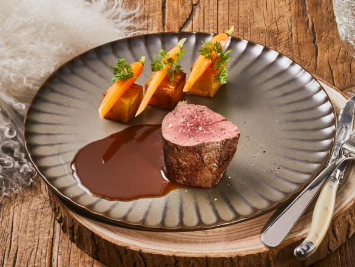
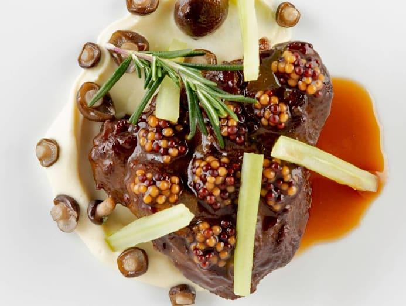

Tornedó de novilho com molho de vinho tinto, batata fondant e cenouras baby
Medalhões de novilho com molho intenso de vinho tinto, batata fondant dourada e cenouras baby glaceadas.
Um clássico da alta cozinha francesa.
Ingredientes
Carne
- 2 medalhões de lombo de novilho, 180–200 g cada
- 15 ml de azeite
- 20 g de manteiga
- 1 ramo de tomilho
- 1 dente de alho esmagado
- Sal e pimenta-preta q.b.]
Molho
- Molho de vinho tinto
- 200 ml de vinho tinto seco
- 250 ml de fundo escuro de vitela ou vaca
- - 1 chalota picada, cerca de 30 g
- - 10 g de manteiga fria
- - 5 ml de azeite
Batata fondant
2 batatas grandes,cerca de 350 g
- 25 g de manteiga
- 10 ml de azeite
- 250 ml de caldo de aves ou legumes
- Tomilho e sal q.b
Cenouras baby glaceadas
- - 150 g de cenouras baby
- - 15 g de manteiga
- - 50 ml de água
- - 1 pitada de açúcar e sa
Modo de preparação
- Batata fondant: descasca as batatas e corta-as em cilindros ou formas ovais. Doura as faces numa frigideira com azeite. Junta a manteiga, o tomilho e o fundo quente até aproximadamente metade da altura das batatas. Leva ao forno a 180 °C durante 25–35 minutos, regando ocasionalmente, até ficarem macias e douradas.
- Cenouras: coloca-as numa frigideira com manteiga, água, açúcar e sal. Cozinha em lume médio, parcialmente tapadas, até ficarem tenras. Retira a tampa e deixa o líquido reduzir até criar um brilho ligeiro.
- Molho: refoga a chalota no azeite. Junta o vinho tinto e deixa reduzir até perder boa parte do volume. Adiciona o fundo escuro e reduz até obter uma consistência que cubra as costas de uma colher. Coa e incorpora a manteiga fria fora do lume.
- Carne: tempera os medalhões. Aquece bem uma frigideira e sela a carne de todos os lados. Acrescenta a manteiga, o alho e o tomilho; rega repetidamente a carne com a manteiga aromatizada. Termina no forno, se necessário, até atingir o ponto desejado.
- Deixa a carne repousar 5–8 minutos antes de servir.
Empratamento: coloca a batata fondant ligeiramente fora do centro, dispõe o medalhão ao lado e as cenouras em pequenos grupos. Verte o molho à volta da carne, sem esconder a superfície tostada

Bochecha de vaca estufada em vinho do Porto, puré de aipo-rábano e chalotas caramelizadas
Ingredientes
Bochechas de vaca
- 2 bochechas de vaca, cerca de 300 g cada
- 15 ml de azeite
- 1 chalota picada
- 1 dente de alho picado
- 1 ramo de tomilho
- 1 folha de louro
- 200 ml de vinho do Porto
- 250 ml de fundo escuro de vitela ou vaca
- Sal e pimenta-preta q.b.
Puré
- 350 g de aipo-rábano descascada
- 100 g de batata
- 50 ml de natas
- 30 g de manteiga
- Sal e noz-moscada q.b.
Charlotas
- - 6 chalotas pequenas, cerca de 120 g
- - 15 g de manteiga
- - 100 ml de água
- - 1 pitada de açúcar
Modo de preparação
- Tempera as bochechas e sela-as numa caçarola com azeite, até ficarem bem douradas. Retira e reserva.
- Na mesma caçarola, doura a cebola, a cenoura, o aipo e o alho cortados em pedaços. Acrescenta o vinho tinto e o vinho do Porto, raspando o fundo para soltar os sucos caramelizados.
- Deixa reduzir durante alguns minutos. Junta o fundo, o louro, o tomilho e a carne. Tapa e leva ao forno a 150 °C durante aproximadamente 3 horas, até a carne ceder facilmente à pressão de um garfo.
- Retira a carne e coa o líquido. Reduz o molho até ficar concentrado e brilhante. Se necessário, retifica o sal e a acidez.
- Para o puré, cozinha o aipo-rábano e a batata em água com sal até ficarem macios. Escorre muito bem, tritura com a manteiga e as natas quentes e passa por um passador fino.
- Para as chalotas, descasca-as e coloca-as numa frigideira com manteiga, água, açúcar e uma pitada de sal. Cozinha suavemente até ficarem macias e o líquido formar uma cobertura brilhante.
- Antes de servir, aquece as bochechas no próprio molho, regando-as para ficarem glaceadas.
Empratamento:faz uma lágrima larga de puré, coloca a bochecha por cima ou ao lado e dispõe as chalotas em alturas diferentes. Finaliza com o molho reduzido e algumas folhas de tomilho.

Wellington de novilho com duxelles de cogumelos e molho de Madeira
Ingredientes
Wellington
- 1 lombo de novilho, cerca de 350-400 g
- 15 ml de azeite
- Sal e pimenta-preta q.b.
- 250 g de cogumelos casta nhos
- 1 chalota 30 g
- 1 dente de alho picado
- 15 g de manteiga
- 1 ramo de tomilho
- 1 folha de louro
- 100 ml de vinho branco seco
- 1 colher de chá de mostarda Dijon
- 1 follhamassa retângular folhada (cerca de 275 g)
- 1 ovo batido para pincelar
Molho
- 200 ml de vinho do Porto
- 250 ml de fundo escuro de vitela ou vaca
- 1 chalota picada, cerca de 30 g
- 10 g de manteiga fria
- 5 ml de azeite
Modo de preparação
- Pica os cogumelos muito finamente, à mão ou num processador, sem os transformar numa pasta. Salteia a chalota e o alho na manteiga, junta os cogumelos e cozinha até toda a humidade evaporar. A mistura deve ficar quase seca. Arrefece completamente.
- Tempera o lombo e sela-o rapidamente em azeite quente, dourando todas as faces. Retira, deixa arrefecer e pincela com a mostarda.
- Sobre película aderente, distribui o presunto em retângulo. Espalha a duxelles por cima e coloca o lombo no centro. Enrola firmemente e refrigera durante 20 minutos.
- Envolve a carne na massa folhada fria, fecha as extremidades e coloca a união virada para baixo. Pincela com gema batida e faz pequenas incisões decorativas superficiais, sem perfurar a massa.
- Leva ao forno pré-aquecido a 200 °C. O tempo depende da espessura e do ponto pretendido; começa a verificar a temperatura interna após cerca de 20 minutos. Para uma peça rosada, retira-a quando o centro estiver próximo de 48–50 °C e deixa repousar; a temperatura continuará a subir. Usa um termómetro e respeita as orientações de segurança alimentar aplicáveis.
- Para o molho, refoga a chalota picada, adiciona o vinho da Madeira e reduz. Junta o fundo escuro, reduz até ganhar corpo e incorpora a manteiga fria fora do lume.
- Deixa o Wellington repousar cerca de 10 minutos antes de cortar com uma faca serrilhada.
Empratamento: serve uma fatia grossa, mostrando as camadas da massa, do presunto, dos cogumelos e da carne. Acrescenta o molho de Madeira ao lado e acompanha com legumes verdes salteados.